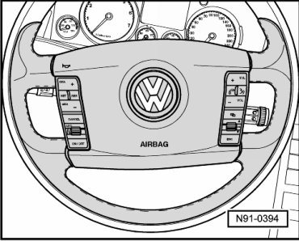

Steering Mounted Controls Assembly: Testing and Inspection
Multifunction Steering Wheel, Adapting Components
• Required Special Tools and Equipment Vehicle Diagnosis, Testing and Information System (VAS 5051) or Vehicle Diagnosis and Service System (VAS 5052)Diagnostic adapter cable (VAS 5051/5a) or (VAS 5051/6a) or (VAS 5052/3)
Components, multi-function steering wheel, adapting:
Select "Guided Functions" in Diagnostic Operation System (VAS 5051) or Vehicle Diagnosis and Service System (VAS 5052).
or
Select "Guided Fault Finding" in Vehicle Diagnosis, Testing and Information System (VAS 5051) or Vehicle Diagnosis and Service System (VAS 5052).
After Diagnostic Trouble Code (DTC) memory of all control modules has been checked:
- Press button "Go to".
- Select "Function/Component Selection".
- Select "Body".
- Select "Electrical Systems".
- Select "01 - Systems capable of self-diagnosis".
- Select "Steering Column Electronics".
- Select "Code Control Unit Function".
Troubleshooting
The Control Module in Steering Wheel (E221)communicates with Steering Column Electronic Systems Control Module (J527). Data commands are processed there once more for further communication.
Multifunction Steering Wheel has On Board Diagnostic (OBD) capabilities.
When performing Fault-Finding, use Diagnostic Operation System (VAS 5051) or Vehicle Diagnosis and Service System (VAS 5052) in the function "Guided Fault Finding ".
The Multifunction Steering Wheel is made up of the following components:

• The Control unit in the steering wheel with two button arrays with integrated electronics, left and right on the steering wheel.
• Control unit for Multifunction Steering Wheel.
• Before troubleshooting or servicing, technicians must be familiar with the functions and operation specifics of the Multifunction Steering Wheel. Always read the owner's manual and review specific Communication system functions.
• For additional information --> Operating instructions